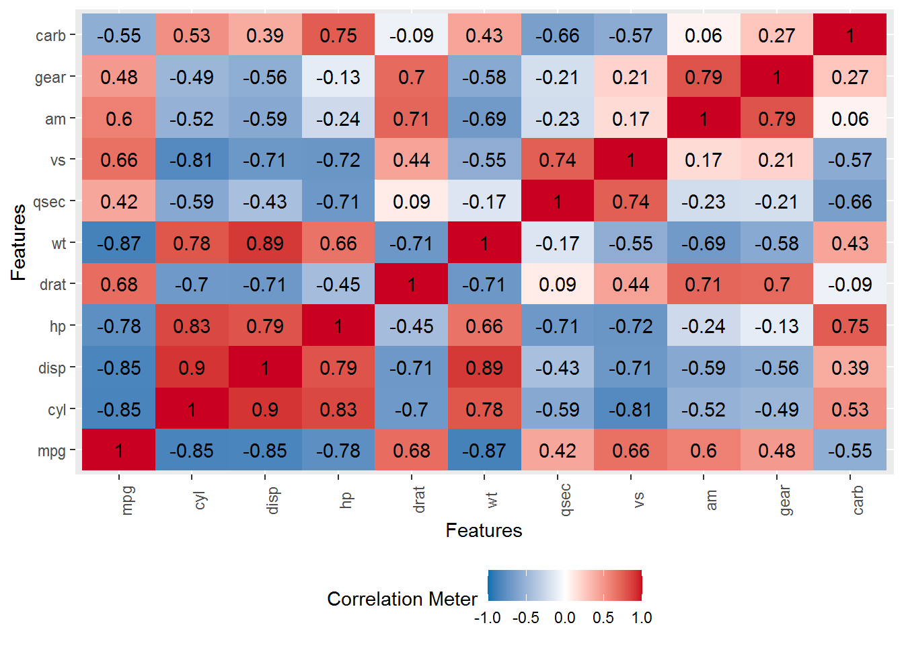

Human Vs Machine
Machine Learning & AI are the new buzzwords we will keep hearing as they are becoming critical part of every sphere of life, business and society. Why these terms have become so important these days because of three major factors — huge amount of data generation at very rapid speed, deepening data storage capacity and increasing data processing speed. With onset of 5G, it is going to flareup more and more.
In the term “Machine Learning”, Machine means computer. How machine learning happens is just like we understand the world but with different tools and techniques. We consume loads of information and through this, we build our decision making framework based on intution, experience, urgency, opinions, etc. and select optimal alternative among the set of alternatives.
In machine learning, machine also consumes loads and loads of information, processes it with a defined framework made up of statistics, mathematical modeling and inter-relatedness between inputs and outputs. Thus, machine produces the optimal alternatives based on set of benchmarks.
Human Vs Machine
Artificial Intelligence aka AI is the collection of tools and techniques to mimic human behavior. Everybody knows ALEXA. Alexa takes voice commands and plays accordingly. Most of the AI applications are built on Neural Networks.
Mr. Car Designer specializes in designing car engine setup and bodywork. He has data of many car models that contain info related to miles per gallon, number of gears, type of transmission, engine type etc. He wants to estimate mileage of his concept car before actual prototype development so that he can convince company to invest a pre payment for his concept.
He has following data set—
data("mtcars")
head(mtcars, 10)## mpg cyl disp hp drat wt qsec vs am gear carb
## Mazda RX4 21.0 6 160.0 110 3.90 2.620 16.46 0 1 4 4
## Mazda RX4 Wag 21.0 6 160.0 110 3.90 2.875 17.02 0 1 4 4
## Datsun 710 22.8 4 108.0 93 3.85 2.320 18.61 1 1 4 1
## Hornet 4 Drive 21.4 6 258.0 110 3.08 3.215 19.44 1 0 3 1
## Hornet Sportabout 18.7 8 360.0 175 3.15 3.440 17.02 0 0 3 2
## Valiant 18.1 6 225.0 105 2.76 3.460 20.22 1 0 3 1
## Duster 360 14.3 8 360.0 245 3.21 3.570 15.84 0 0 3 4
## Merc 240D 24.4 4 146.7 62 3.69 3.190 20.00 1 0 4 2
## Merc 230 22.8 4 140.8 95 3.92 3.150 22.90 1 0 4 2
## Merc 280 19.2 6 167.6 123 3.92 3.440 18.30 1 0 4 4Number of observations and variables in the dataset is as following—
dim(mtcars)## [1] 32 11colnames(mtcars)## [1] "mpg" "cyl" "disp" "hp" "drat" "wt" "qsec" "vs" "am" "gear"
## [11] "carb"The dataset has observations related to 32 car models and there are 11 variables. Let us explore more about dataset—
DataExplorer::plot_correlation(mtcars)
knitr::include_graphics("C:\\Users\\arunkumar\\Desktop\\AS\\cor.png") Above figure shows the correlation among the variables. the blue shaded cells have negative correlations and red shaded cells have positive correlation between the corresponding variables. As Mr. Car Designer is concerned with mileage aka miles per gallon of the concept car. He observes that miles per gallon (mpg) is positively related to drat, qsec, vs, am and gear while it is negatively correlated with wt and carb.
Above figure shows the correlation among the variables. the blue shaded cells have negative correlations and red shaded cells have positive correlation between the corresponding variables. As Mr. Car Designer is concerned with mileage aka miles per gallon of the concept car. He observes that miles per gallon (mpg) is positively related to drat, qsec, vs, am and gear while it is negatively correlated with wt and carb.
Now, this information can be used to build a mathematical/statistical model that can predict the mpg of a concept car based on given values of variables.
To build model, we need to divide data into train and test sets. train set will consist of 80% observations of original dataset and rest 20% observations will be used for testing the prediction capability of the model.
set.seed(1234)
s=sample(1:nrow(mtcars), replace = TRUE, 0.8*nrow(mtcars))
train=mtcars[s,]
test=mtcars[-s,]
dim(train)## [1] 25 11dim(test)## [1] 16 11Now, we will build Linear Regression model—
model=lm(mpg~.,data=train)
summary(model)##
## Call:
## lm(formula = mpg ~ ., data = train)
##
## Residuals:
## Min 1Q Median 3Q Max
## -1.2732 -0.6084 -0.1825 0.4189 2.4598
##
## Coefficients:
## Estimate Std. Error t value Pr(>|t|)
## (Intercept) -105.52824 38.02038 -2.776 0.01488 *
## cyl 7.54817 2.69303 2.803 0.01410 *
## disp 0.01571 0.01054 1.491 0.15807
## hp -0.01093 0.02952 -0.370 0.71669
## drat 6.67428 2.38285 2.801 0.01415 *
## wt -4.08017 1.48972 -2.739 0.01599 *
## qsec 1.99249 0.70981 2.807 0.01398 *
## vs 11.17275 4.51353 2.475 0.02671 *
## am 7.05615 2.71178 2.602 0.02089 *
## gear 7.37043 2.30509 3.197 0.00645 **
## carb -1.31572 0.83361 -1.578 0.13681
## ---
## Signif. codes: 0 '***' 0.001 '**' 0.01 '*' 0.05 '.' 0.1 ' ' 1
##
## Residual standard error: 1.251 on 14 degrees of freedom
## Multiple R-squared: 0.9764, Adjusted R-squared: 0.9596
## F-statistic: 58 on 10 and 14 DF, p-value: 1.227e-09The model has reasonably good R squared value i.e. 0.9764. We can use this model for predicting the mpg for test dataset.
pred=predict(model, newdata=test[,-1])
pred=data.frame(pred)
head(pred)## pred
## Mazda RX4 20.48336
## Datsun 710 25.04993
## Merc 240D 15.77691
## Merc 280 25.03121
## Merc 280C 26.22670
## Merc 450SL 15.72594To evaluate model predictions, we can calculate Mean Percentage Error—
library(Metrics)
mape(test$mpg,pred$pred)## [1] 0.3311992Now, Mr. Car Designer can feed his on set of readings of variables and guesstimate the mpg of the concept car before producing any physical prototype.
This how machine learning can save huge costs, resources and time. Machine Learning is going to serve the society, businesses and individuals and it will profuse more rapidly and deeply.